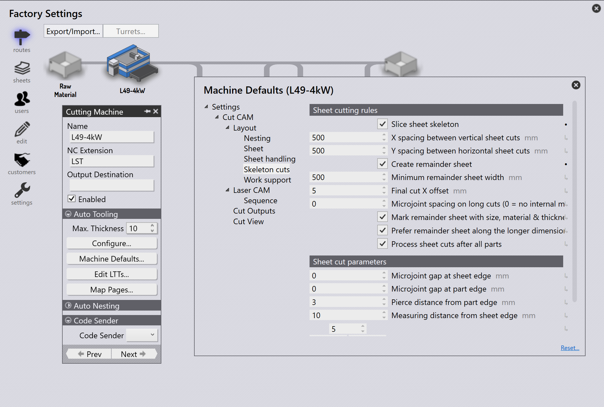

자동 잔재 관리
잔재 활성화
TruSmartCAM 은(는) 네스팅 중에 레이아웃에서 자동 잔재 시트 생성을 지원합니다. 이 기능은 TecZone Laser 머신에서만 사용할 수 있습니다.
-
factory → Machines → Machine Defaults → Skeleton cuts 를 클릭합니다.
-
이 기능을 활성화하려면 Slice Sheet Skeleton 및 Create Remainder Sheet 옵션을 선택합니다.
활성화하면 네스트된 시트의 남은 영역이 X 및 Y 에 할당된 Minimum Remainder Sheet Value 를 기준으로 잔여 시트로 잘립니다.

자동 잔재 구성
-
factory → Settings → Job 를 클릭합니다.
-
Update sheet inventory on nest (un)release 및 Automate remnant inventory management 를 선택합니다.

자동 잔재
부품을 네스팅할 때 남은 시트 영역이 Minimum Sheet Value X 및 Y 를 충족하면 TruSmartCAM 이(가) 남은 공간에서 자동으로 Remnant Sheet 를 생성합니다.
-
Job Nest 보기에서 잔재 시트가 있는 네스트는 녹색 테두리 윤곽선과 회색 배경으로 표시됩니다.

-
네스트를 두 번 클릭하여 Nest Detail 페이지를 엽니다. 잔재 시트 정보가 잔재 시트 크기, 수량 및 영역과 함께 표시됩니다.
-
네스트를 마우스 오른쪽 버튼으로 클릭하고 Edit 를 선택하여 TecZone 에서 엽니다. 네스트에는 부품 사이의 슬라이스 라인과 스켈레톤 슬라이스 라인이 잔재 치수 각인(Material, Thickness 및 Remnant Size)과 함께 표시됩니다.
잔재 치수 각인 마크는 작업자가 측정 없이 시트를 선택하는 데 도움이 되어 향후 네스트에서 쉽게 사용할 수 있습니다.
Mark Complete 를 클릭하면 잔재 시트가 녹색 체크 표시와 함께 표시되어 네스트가 완료되었음을 나타냅니다. 부분적으로 음영 처리된 사각형 아이콘은 잔재 시트가 생성되어 시트 인벤토리에 업데이트되었음을 나타냅니다.

시트 데이터베이스가 잔재 시트의 크기와 수량으로 업데이트되며, 시트 크기 끝에 별표(*) 기호로 식별됩니다. 잔재 시트에는 녹색 테두리가 있습니다.

작업의 auto plan 또는 interactive plan 은 잔재 시트를 네스트 계획에서 높은 우선순위로 간주하여, 사용하지 않은 잔재가 작업 현장에 남지 않도록 먼저 사용되도록 합니다.